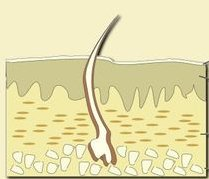

קוד: ביאור:ויקרא יג3 בתנ"ך
סוג: דיון1
מאת: אראל
אל:
אחד מדיני הצרעת קשור לעומקו של הנגע:
ויקרא יג3-4: "וְרָאָה הַכֹּהֵן אֶת הַנֶּגַע בְּעוֹר הַבָּשָׂר, וְשֵׂעָר בַּנֶּגַע הָפַךְ לָבָן,
וּמַרְאֵה הַנֶּגַע עָמֹק מֵעוֹר בְּשָׂרוֹ - נֶגַע צָרַעַת הוּא, וְרָאָהוּ הַכֹּהֵן וְטִמֵּא אֹתוֹ. וְאִם בַּהֶרֶת לְבָנָה הוּא בְּעוֹר בְּשָׂרוֹ, ועָמֹק אֵין מַרְאֶהָ מִן הָעוֹר, וְשֵׂעָרה לֹא הָפַךְ לָבָן - וְהִסְגִּיר הַכֹּהֵן אֶת הַנֶּגַע שִׁבְעַת יָמִים.
"
אם הנגע עמוק מעור-הבשר - הוא טמא מיד. אבל אם הנגע לא עמוק מעור-הבשר - מסגירים אותו, ורק לאחר 7 ימים מחליטים אם הוא טמא. לענ"ד, משמעות הביטוי "עמוק מעור בשרו
" היא כפשוטו - הנגע נראה עמוק וחודר מתחת לעור.
הסימן שנזכר לפני כן - "ושער בנגע הפך לבן
" - מטרתו לסייע לכהן להבחין אם הנגע עמוק: אם הנגע גרם לשער להפוך ללבן - זה אומר שהוא פגע בשורשי השער, שנמצאים בעומק העור; ראו בתמונה מתוך ויקיפדיה:

פירוש זה מתאים לסימנים האחרים של נגע הצרעת (פירוט).
עמוק מעור בשרו - כל מראה לבן עמוק הוא, כמראה חמה העמוקה מן הצל", כלומר, בהיר יותר מהעור; אולם פירוש זה לא ברור לי:
ואם בהרת לבנה היא... ועמוק אין מראה מן העור", ואם כל מראה לבן עמוק הוא, איך תיתכן בהרת לבנה שמראה אינו עמוק מן העור? וגם רש"י כתב בפסוק זה "
לא ידעתי פירושו" (וע' רמב"ן, ספורנו, רנה"ו, שד"ל ורש"ר הירש, שתירצו קושיה זו בדרכים שונות).
עמוק מעור בשרו" מתפרש כמשמעו - הנגע פשוט נראה עמוק וחודר לתוך הבשר.
2. ור' יוסף שאול נתנזון הסביר את המשמעות הרוחנית של הדין: אם נגעו הרוחני של האדם קשור רק לבשרו, לתאוות הגשמיות שאין הוא מצליח להתגבר עליהן - הרי זו חצי צרה. אך אם הנגע עמוק מעור בשרו, והוא מגיע אל האמונות והדעות - נגע כזה נגע צרעת הוא... ("חיוכה של תורה").